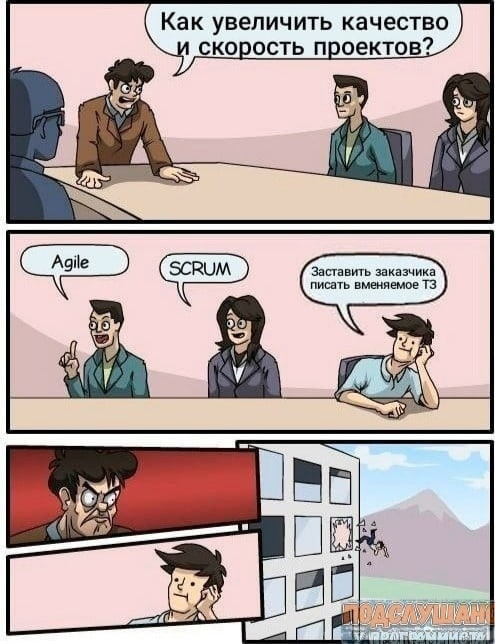

Мы провели опрос среди наших коллег и выявили топ лучших мемов.
Годные мемы по мнению наших коллег
жиза

бывает
кек
также про хороших прогеров можно сказать
А вот список худших мемов которые мы прелагали оценить нашим коллегам:
Баяны, вообще не смешно ...
быват
не смешно !
баянище
Вообще то можно использовать знак `;` и писать код в одну строку